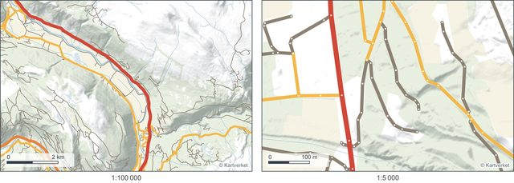
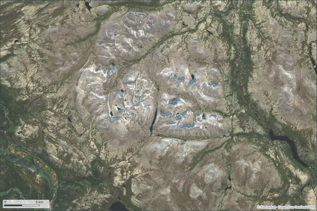
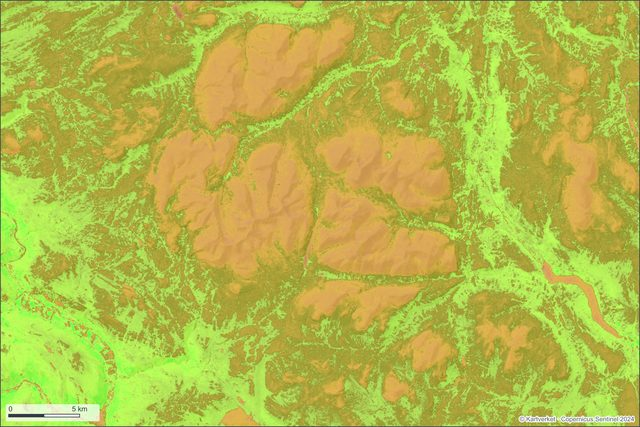
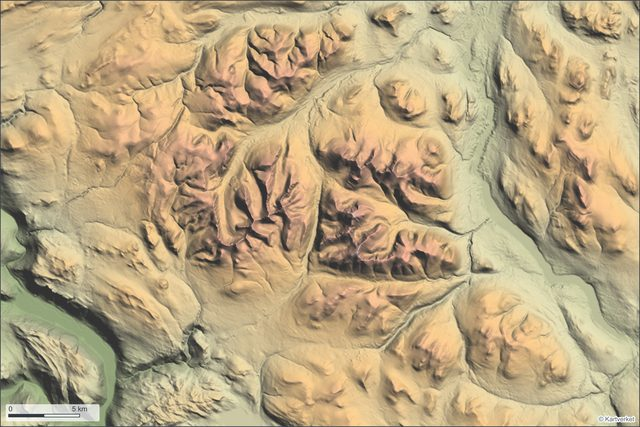
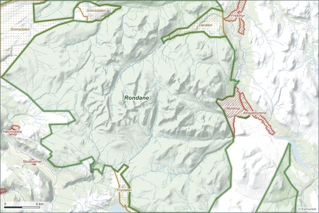
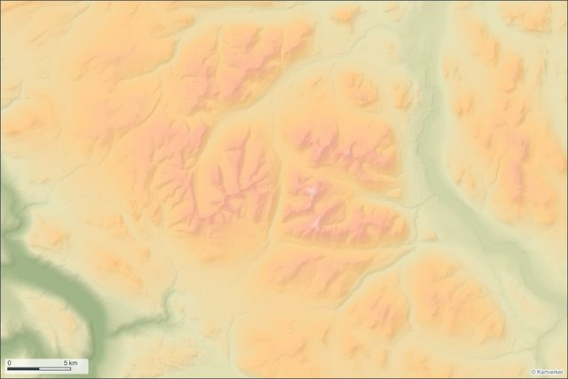
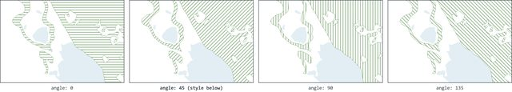
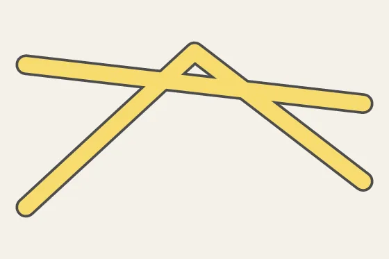
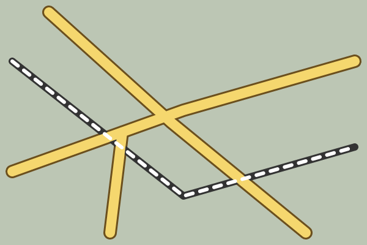

Examples in the standard
Every example map in Part 1 is drawn by this renderer on Norwegian data. All examples →

Roads in Sel by road class, with the E6 through Selsverket (N50 Kartdata)
Sentinel-2 L2A over Rondane (1 September 2024) in natural color
NDVI of the same Sentinel-2 scene with a color map
Elevation of Rondane with hill shading and a color map
Protected areas around Rondane by kind of protection (N50 Kartdata)
Elevation of Rondane with a color mapExplore

Requirements
All 142 requirements, recommendations and permissions, each with its text and how it is checked: a render, test cases run through three implementations, or a note.

Judgement calls
23 places where the text leaves (or left) a choice, each drawn every way, with a decision matrix of proposed resolutions. In 2 the text still makes no choice.

Rendering passes
Test cases for how passes, zOrder, casings and nested rules
decide what is drawn on top, each with a render kit for other software.
[dataLayer.id = 'Roads'] {
stroke: {
color: #c0392b;
width: 3 px;
casing: { color: white; width: 1 px; };
};
}
Playground
Edit the style of any card or sample and see the draft renderer draw it again, in your browser.
Where things stand
The requirement text is from origin/main at
fefe225. On the 158 expression test cases (run on 2026-11-25), libCartoSym gives something else on 10 and pycartosym gives something else on 5; the requirements page shows which. The draft renderer implements the text itself, so
its results show that it matches the text, not that the text is right; the independent renders in the records are
there for that.
Records
The walkthroughs of earlier pull requests, kept as they were presented, and the full records behind the pages:
- #133 walkthrough: The Part 1 requirements class by class, as prepared for the SWG meeting of 13 November 2026, where #133 was merged
- #192 walkthrough: The examples and figures in the Part 1 document, and the wording checked with independent renderers
- Wording decisions: For each requirement whose wording #192 tightened: the text before, how each reader rendered it, the reading proposed
- Independent renders: Renderers and expression evaluators written from the requirement text alone, with their notes and images
- Expression test report: Every test case with each implementation's full output, against the latest libCartoSym (CI)